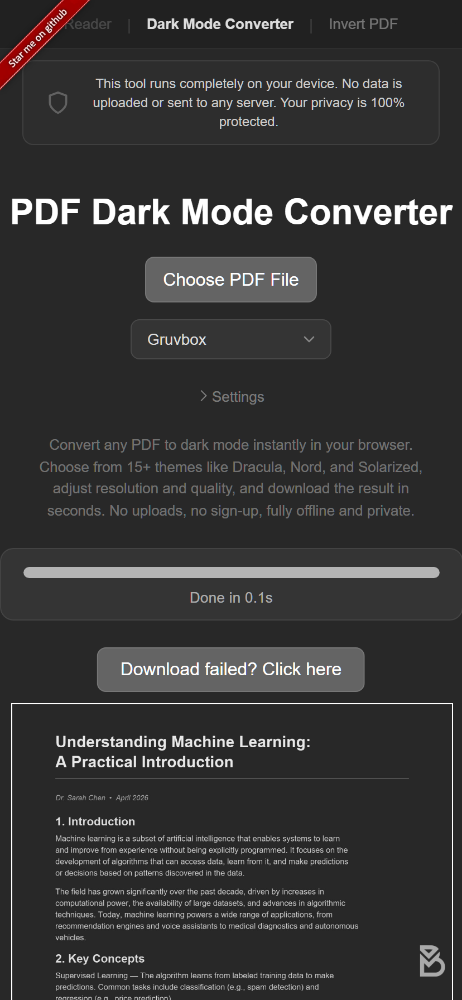

AndroidでのPDFダークモード：目の疲れなしでPDFを読む
Androidにはシステムレベルのダークテーマがありますが、PDFファイルのコンテンツは変更されません。Google Drive、Chrome、またはどのファイルマネージャーでPDFを開いても、ページは白いままです。スマートフォンで頻繁にドキュメントを読む方のために、本当のダーク背景を実現する方法をご紹介します。
スマートフォンでPDFを変換する
アプリのインストールは不要です。AndroidデバイスのChrome（または任意のブラウザ）でPDF Dark Mode Converterを開きます：
- アップロードボタンをタップするか、PDFをページにドラッグ＆ドロップします。
- 16種類以上のテーマから選択します。人気のテーマにはDracula、Nord、Solarized、Tokyo Nightがあります。
- ダークモードPDFが自動的にデバイスにダウンロードされます。
変換はリモートサーバーではなく、スマートフォンのローカルで行われます。ファイルは完全にプライベートです。デバイスのGPUをカラー処理に活用するため、ミッドレンジのスマートフォンでも高速に完了します。

Google Driveのダークモードはどうですか？
Google Driveアプリはダークモードに対応していますが、これはアプリのインターフェース（メニューやファイルリスト）のみを変更します。PDFを開くと、ページは元の色のまま表示されます。Google Driveからこれを変更する方法はありません。
Androidの夜間モード・読書モードはどうですか？
一部のAndroidスマートフォンには、画面に暖色系のフィルターをかける読書モードや目の保護モードがあります。これはブルーライトを軽減し、夜間の目の疲れを和らげるかもしれませんが、PDF背景を実際に暗くするわけではありません。わずかに色合いがかかった白いページが表示されるだけで、本当のダーク背景にはなりません。
ダークモード対応のPDFリーダーアプリ
一部のAndroid PDFリーダーアプリ（XodoやMoon+ Readerなど）はダークリーディングモードを提供しています。これらはオーバーレイのように機能するため：
- 効果はそのアプリ内でのみ表示されます。
- ファイルを共有すると、受け取った人には白い元のPDFが表示されます。
- 別途アプリのインストールと設定が必要です。
ファイルを直接変換すれば、どのアプリでもどの共有シーンでも正常に表示される永久的なダークモードPDFが得られます。
大きな画面が必要な場合は、iPadダークモードガイドをご覧ください。iPhoneユーザーはiPhone専用ガイドで小さな画面での読書のヒントを参考にできます。
今すぐ試す：AndroidスマートフォンでPDF Dark Mode Converterを開きます。テーマを選択して、数秒でPDFを変換・ダウンロードしましょう。無料・プライベート・アプリのインストール不要です。
よくある質問
適用されません。Androidのダークテーマはアプリのインターフェースにのみ影響します。PDFコンテンツはすべてのリーダーやファイルマネージャーで元の色のまま表示されます。
必要ありません。PDF Dark Mode Converterはスマートフォンのブラウザ内で直接動作し、アプリのインストールは不要です。
はい、変換ツールはAndroidのChromeやその他のブラウザで動作します。スマートフォンのGPUを活用して高速に処理し、ファイルがデバイスの外に出ることはありません。